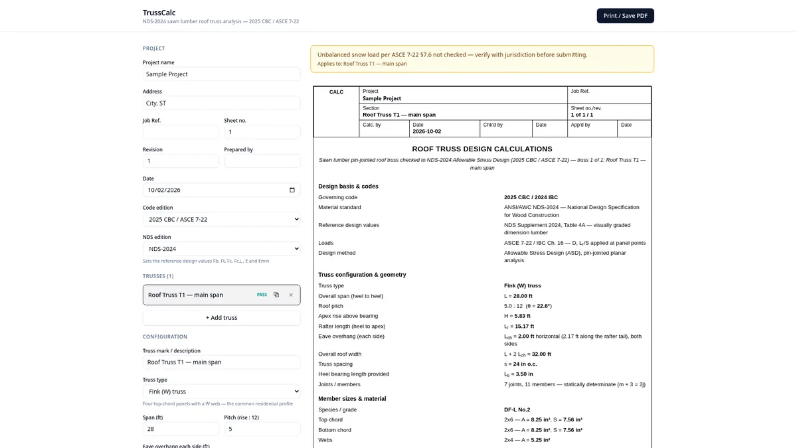

Wood · roof trusses
TrussCalc — Roof Truss Calculator
Sawn-lumber, pin-jointed roof truss analysis and member checks, with a full calculation report.
- Fink, king-post, queen-post, parallel-chord and custom / hybrid truss layouts
- Member forces, combined stress checks and joint visualisation
- Multiple trusses per report; export results to PDF or CSV
NDS-20242025 CBC / 2024 IBCASCE 7-22